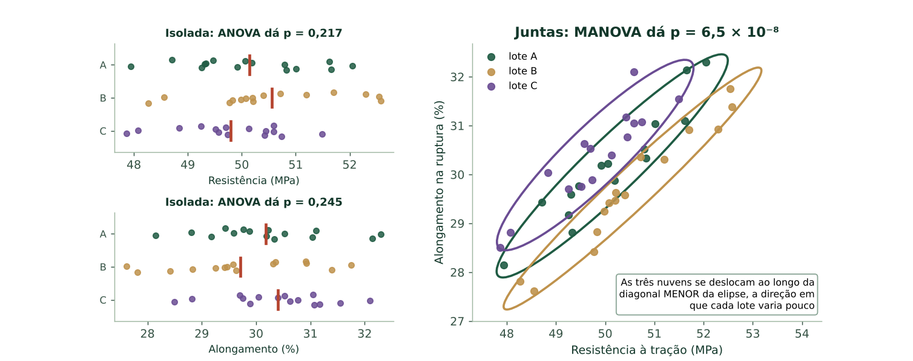
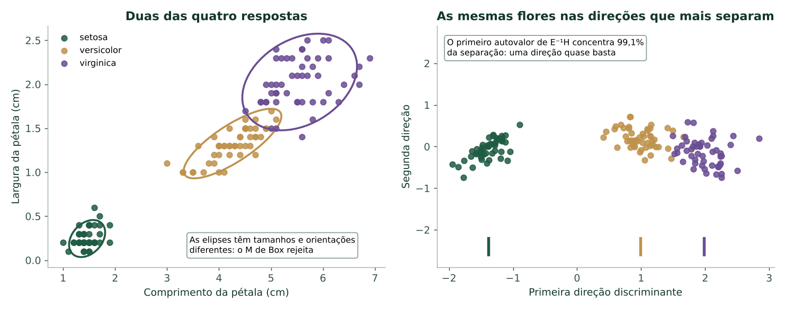

MANOVA
Compara vetores de médias de vários grupos usando todas as respostas ao mesmo tempo, aproveitando a correlação entre elas.
Comece por aqui
Quando um experimento mede várias respostas nas mesmas unidades — altura e diâmetro, resistência e alongamento, quatro medidas de uma flor —, a saída mais comum é rodar uma ANOVA para cada uma. Isso inflaciona a taxa de erro, como sempre, mas o problema maior é outro: ignora que as respostas estão correlacionadas, e com isso deixa escapar diferenças que só aparecem na combinação delas.
No exemplo desta ficha, duas medidas de um polímero dão p = 0,217 e p = 0,245 quando analisadas separadamente — nada. Analisadas juntas, p = 6,5 × 10⁻⁸. A informação não estava em nenhuma das duas: estava na relação entre elas.
O que é a MANOVA
Na ANOVA de um fator, a variação total é uma soma de quadrados que se parte em duas: entre e dentro. Na MANOVA, cada uma dessas parcelas vira uma matriz \(p\times p\), com variâncias na diagonal e covariâncias fora dela: \(\mathbf H\) para a hipótese (entre grupos) e \(\mathbf E\) para o erro (dentro). O teste pergunta o quanto \(\mathbf H\) é grande em relação a \(\mathbf E\) — e, como matrizes não se dividem, há mais de uma forma de responder.

Se as duas medidas fossem independentes, a nuvem de cada lote seria circular e a separação ao longo da diagonal apareceria também em cada eixo. É a correlação alta dentro dos grupos que achata a nuvem e cria uma direção de baixa variabilidade: nessa direção, um deslocamento pequeno em cada variável é um deslocamento grande em termos relativos. A MANOVA pondera automaticamente por essa estrutura.
Pressupostos e como verificá-los
| Pressuposto | Por que importa | Como verificar |
|---|---|---|
| Observações independentes | Indispensável. | Delineamento. |
| Normalidade multivariada em cada grupo | Sustenta as distribuições aproximadas. | Teste de Mardia; Q-Q das distâncias de Mahalanobis; Shapiro–Wilk em cada resposta é condição necessária, não suficiente. |
| Matrizes de covariância iguais entre os grupos | É o análogo multivariado da homogeneidade de variâncias. | Teste M de Box. Ele é sensível a desvios de normalidade; com grupos balanceados, o traço de Pillai tolera bem a violação. |
| n por grupo maior que o número de respostas | E, de preferência, bem maior. | Se \(n_i\leq p\), a matriz E fica singular e nada é estimável. |
| Relações lineares entre as respostas | As matrizes de covariância só capturam associação linear. | Matriz de diagramas de dispersão. |
| Ausência de multicolinearidade severa | Respostas quase redundantes tornam E mal condicionada. | Correlações entre as respostas; determinante de E. |
| Ausência de observações multivariadas atípicas | Um ponto distante em duas dimensões pode não ser extremo em nenhuma delas. | Distância de Mahalanobis. |
Hipóteses e estatística de teste
Sejam \(\lambda_1\geq\lambda_2\geq\cdots\geq\lambda_s\) os autovalores não nulos de \(\mathbf E^{-1}\mathbf H\), com \(s=\min(k-1,p)\). As quatro estatísticas usuais são funções desses autovalores:
Em que:
- \(p\)
- número de respostas
- \(k\)
- número de grupos
- \(n_i\)
- tamanho do grupo i
- \(\bar{\mathbf y}_i\)
- vetor de médias do grupo i
- \(\mathbf H,\ \mathbf E\)
- matrizes de somas de quadrados e produtos cruzados, entre e dentro
- \(\lambda_j\)
- autovalores de E⁻¹H: medem a separação em cada direção
- \(s\)
- número de direções discriminantes possíveis
Exemplo numérico, passo a passo
Nos dados dos três lotes de polímero (k = 3, p = 2, n = 15 cada, N = 45), os autovalores de \(\mathbf E^{-1}\mathbf H\) são \(\lambda_1=2{,}8158\) e \(\lambda_2=0{,}0004\).
\(V=\dfrac{2{,}8158}{3{,}8158}+\dfrac{0{,}0004}{1{,}0004}=0{,}7383\); \(\Lambda=\dfrac{1}{3{,}8158}\times\dfrac{1}{1{,}0004}=0{,}2620\); \(T=2{,}8162\); \(\theta=2{,}8158\).
Com \(s=\min(2,2)=2\), \(\text{gl}_H=2\) e \(\text{gl}_E=42\), a aproximação F do traço de Pillai usa \(m=(|2-2|-1)/2=-0{,}5\) e \(n=(42-2-1)/2=19{,}5\):
O segundo autovalor é praticamente zero: toda a separação está em uma direção. Essa direção é, aproximadamente, a diferença resistência − alongamento, cuja ANOVA univariada devolve \(F(2;42)=58{,}34\) e \(p=7{,}5\times10^{-13}\).
Qual das quatro estatísticas usar
| Estatística | Base | Quando preferir |
|---|---|---|
| Traço de Pillai | Soma de λ/(1+λ); entre 0 e s. | Padrão recomendado. É a mais robusta a desvios de normalidade e de homogeneidade das covariâncias. É o padrão de summary.manova. |
| Lambda de Wilks | Produto de 1/(1+λ); entre 0 e 1, pequeno indica separação. | A mais tradicional; liga-se diretamente ao teste de razão de verossimilhanças. |
| Traço de Hotelling–Lawley | Soma dos λ. | Mais poderosa quando a separação se espalha por várias direções. |
| Maior raiz de Roy | Apenas λ₁. | Mais poderosa quando toda a separação está em uma direção; a menos robusta, e seu valor-p é apenas um limite inferior. |
As quatro coincidem quando \(s=1\) — isto é, com dois grupos ou uma só resposta. Quando divergem na conclusão, é sinal de que a estrutura de separação é peculiar, e vale examinar os autovalores.
Propriedades
- Com p = 1, reduz-se à ANOVA de um fator.
- Com k = 2, equivale ao \(T^2\) de Hotelling, o análogo multivariado do teste t.
- \(\Lambda=\det(\mathbf E)/\det(\mathbf E+\mathbf H)\): é a razão entre os "volumes" do erro e do total.
- Tamanho de efeito: \(\eta^2_{\text{multi}}=V/s\) (de Pillai) ou \(1-\Lambda^{1/s}\).
- As aproximações F são exatas em alguns casos (p ≤ 2 ou k ≤ 3) e aproximadas nos demais.
- Rejeitar \(H_0\) não diz qual resposta nem qual grupo: isso exige acompanhamento.
Como interpretar os resultados
- Leia a estatística multivariada e seu valor-p. Prefira o traço de Pillai salvo razão em contrário.
- Olhe os autovalores: eles dizem se a separação está em uma direção ou espalhada.
- Se rejeitar, acompanhe com as ANOVAs univariadas, com ajuste para o número de respostas.
- Para entender a estrutura, use a análise discriminante: os coeficientes dizem que combinação das respostas separa os grupos.
- Reporte a estatística, a aproximação F com seus dois graus de liberdade, o valor-p e o tamanho de efeito.
É prática comum rodar as ANOVAs separadas depois de uma MANOVA significativa, como se a MANOVA fosse um "porteiro" que protege a taxa de erro. A proteção é parcial: ela vale para a hipótese conjunta, não para cada resposta. Por isso o ajuste (Bonferroni, por exemplo) continua necessário. E, mais importante, as ANOVAs univariadas podem não encontrar nada mesmo com a MANOVA significativa — é exatamente o que acontece no exemplo do polímero. Nesse caso, a resposta está na combinação, e é a análise discriminante que a revela.
Como executar no R e em Python
Onde executar o código em Python
Não é preciso instalar nada: o Google Colab é um computador na nuvem, gratuito, que executa Python pelo navegador e já traz as bibliotecas usadas aqui (numpy, scipy e matplotlib).
manova() está no pacote stats, já instalado com o R: as respostas entram do lado esquerdo da fórmula com cbind(). summary(mod) devolve o traço de Pillai; o argumento test aceita "Wilks", "Hotelling-Lawley" e "Roy". summary.aov(mod) extrai as ANOVAs univariadas. Para o teste M de Box use biotools::boxM(); para normalidade multivariada, MVN; para a análise discriminante, MASS::lda(). car::Anova() dá mais controle em delineamentos complexos.
mod <- manova(cbind(y1, y2) ~ grupo, data = dados)
summary(mod) # traço de Pillai
summary(mod, test = "Wilks")
summary.aov(mod)
Exemplo de aplicação
Contexto dos dados
Os dados do exemplo são fictícios e foram criados pelo autor. A primeira parte usa três lotes de um polímero, com duas medidas por corpo de prova — resistência à tração e alongamento na ruptura —, construídos para mostrar o que a análise conjunta enxerga. A segunda parte usa iris, o conjunto clássico de Anderson e Fisher: quatro medidas florais em três espécies, com 50 flores cada.
Código em R
# MANOVA: exemplo completo ----
# Pacotes: stats (base), car (testes multivariados), biotools (M de Box), MASS (discriminante)
# install.packages(c("car", "biotools", "MASS", "MVN"))
# PARTE 1 - por que uma MANOVA e não várias ANOVAs
# Dados fictícios: três lotes de um polímero, com duas medidas por corpo de prova.
resistencia <- c(51.62,49.33,48.71,51.01,49.47,50.83,50.19,51.66,49.92,50.79,52.05,50.06,47.94,49.26,49.31,
52.30,49.77,50.40,48.27,50.21,50.20,52.54,48.56,50.72,50.08,49.83,52.58,49.98,51.20,51.70,
50.45,51.49,48.84,50.42,50.59,49.51,50.13,49.74,47.87,49.70,50.59,50.74,49.25,49.57,48.08)
alongamento <- c(31.10,28.81,29.43,31.04,29.77,30.33,29.88,32.14,30.19,30.52,32.30,30.22,28.15,29.17,29.59,
30.93,28.42,29.58,27.82,29.63,29.47,31.75,27.62,30.36,29.42,28.83,31.39,29.25,30.31,30.91,
30.77,31.55,30.04,31.17,31.05,29.75,30.40,29.89,28.50,30.53,32.10,31.07,29.70,30.63,28.82)
lote <- factor(rep(c("A", "B", "C"), each = 15))
polimero <- data.frame(lote, resistencia, alongamento)
aggregate(cbind(resistencia, alongamento) ~ lote, data = polimero, FUN = mean)
# As duas ANOVAs separadas
summary(aov(resistencia ~ lote, data = polimero))
summary(aov(alongamento ~ lote, data = polimero))
# A MANOVA
mod <- manova(cbind(resistencia, alongamento) ~ lote, data = polimero)
summary(mod) # padrão: traço de Pillai
summary(mod, test = "Wilks")
summary(mod, test = "Hotelling-Lawley")
summary(mod, test = "Roy")
summary.aov(mod) # as ANOVAs univariadas, de dentro do objeto
# O gráfico que explica o resultado
plot(resistencia, alongamento, col = lote, pch = 19,
xlab = "Resistência (MPa)", ylab = "Alongamento (%)")
legend("topleft", levels(lote), col = 1:3, pch = 19)
# PARTE 2 - o exemplo canônico: iris
data(iris)
mod2 <- manova(cbind(Sepal.Length, Sepal.Width, Petal.Length, Petal.Width) ~ Species, data = iris)
summary(mod2)
summary(mod2, test = "Wilks")
summary.aov(mod2)
# Pressupostos
library(biotools)
boxM(iris[, 1:4], iris$Species) # igualdade das covariâncias
library(MVN)
mvn(iris[iris$Species == "setosa", 1:4]) # normalidade multivariada por grupo
# (em versões recentes do pacote a função chama-se mvn_test)
# Comparações depois da MANOVA: ANOVAs com ajuste, ou funções discriminantes
p.adjust(sapply(1:4, function(j) summary(aov(iris[, j] ~ iris$Species))[[1]][1, 5]),
method = "bonferroni")
library(MASS)
ld <- lda(Species ~ ., data = iris)
ld # coeficientes de LD1 e LD2
plot(ld)
# Alternativa com car, que dá mais controle sobre o tipo de soma de quadrados
library(car)
m3 <- lm(cbind(Sepal.Length, Sepal.Width, Petal.Length, Petal.Width) ~ Species, data = iris)
Anova(m3, test.statistic = "Pillai")
A mesma análise em Python, com os resultados
Cole o código em um notebook do Google Colab ↗ e execute com Shift+Enter. Os valores abaixo são a saída desse código.
# Bibliotecas: numpy, scipy, matplotlib e scikit-learn (todas já no Google Colab)
import numpy as np
from scipy import stats
from sklearn.datasets import load_iris
def manova(X, g, rotulos=None):
"""Devolve as quatro estatísticas multivariadas e suas aproximações F."""
X = np.asarray(X, float); g = np.asarray(g)
niveis = np.unique(g); k = len(niveis); n, p = X.shape
gm = X.mean(axis=0)
H = np.zeros((p, p)); E = np.zeros((p, p))
for i in niveis:
Xi = X[g == i]; mi = Xi.mean(axis=0)
H += len(Xi) * np.outer(mi - gm, mi - gm) # entre grupos (hipótese)
E += (Xi - mi).T @ (Xi - mi) # dentro dos grupos (erro)
autov = np.sort(np.linalg.eigvals(np.linalg.inv(E) @ H).real)[::-1]
glh, gle = k - 1, n - k
s = min(glh, p)
pillai = float(np.sum(autov[:s] / (1 + autov[:s])))
wilks = float(np.prod(1 / (1 + autov[:s])))
hl = float(np.sum(autov[:s]))
roy = float(autov[0])
m = (abs(glh - p) - 1) / 2; nn = (gle - p - 1) / 2
saida = {}
# Pillai
d1 = s * (2*m + s + 1); d2 = s * (2*nn + s + 1)
F = (pillai / (s - pillai)) * (d2 / d1)
saida["Pillai"] = (pillai, F, d1, d2, stats.f.sf(F, d1, d2))
# Wilks (aproximação de Rao)
r_ = gle - (p - glh + 1) / 2
u = (p * glh - 2) / 4
den = p**2 + glh**2 - 5
t = np.sqrt((p**2 * glh**2 - 4) / den) if den > 0 else 1.0
d1 = p * glh; d2 = r_ * t - 2 * u
F = ((1 - wilks**(1/t)) / wilks**(1/t)) * (d2 / d1)
saida["Wilks"] = (wilks, F, d1, d2, stats.f.sf(F, d1, d2))
# Hotelling-Lawley
b = (gle + glh - p - 1) * (gle - 1) / ((gle - p - 3) * (gle - p))
d1 = s * (2*m + s + 1); d2 = 4 + (d1 + 2) / (b - 1)
cte = d1 * (d2 - 2) / (d2 * (gle - p - 1))
F = hl / cte
saida["Hotelling-Lawley"] = (hl, F, d1, d2, stats.f.sf(F, d1, d2))
# Roy
rr = max(p, glh); d1 = rr; d2 = gle - rr + glh
F = roy * d2 / d1
saida["Roy"] = (roy, F, d1, d2, stats.f.sf(F, d1, d2))
return saida, H, E, autov
def imprime(saida):
print("estatística valor F aprox. gl1 gl2 p-valor")
for nome, (v, F, d1, d2, pv) in saida.items():
print(f"{nome:<20}{v:8.5f} {F:11.4f} {d1:6.1f} {d2:7.2f} {pv:.4e}")
def boxM(X, g):
"""Teste M de Box para igualdade das matrizes de covariância."""
X = np.asarray(X, float); g = np.asarray(g)
niveis = np.unique(g); k = len(niveis); n, p = X.shape
ns = np.array([np.sum(g == i) for i in niveis], float)
Ss = [np.cov(X[g == i], rowvar=False) for i in niveis]
Sp = sum((ns[j] - 1) * Ss[j] for j in range(k)) / (n - k)
M = (n - k) * np.log(np.linalg.det(Sp)) - sum((ns[j] - 1) * np.log(np.linalg.det(Ss[j])) for j in range(k))
c = (sum(1/(ns - 1)) - 1/(n - k)) * (2*p**2 + 3*p - 1) / (6*(p + 1)*(k - 1))
gl = (k - 1) * p * (p + 1) / 2
qui = M * (1 - c)
return M, qui, gl, stats.chi2.sf(qui, gl)
# ===================================================================
# PARTE 1 - por que uma MANOVA e não várias ANOVAs
# Dados fictícios: três lotes de um polímero, com duas medidas por corpo de prova:
# resistência à tração (MPa) e alongamento na ruptura (%).
res = np.array([51.62,49.33,48.71,51.01,49.47,50.83,50.19,51.66,49.92,50.79,52.05,50.06,47.94,49.26,49.31,
52.30,49.77,50.40,48.27,50.21,50.20,52.54,48.56,50.72,50.08,49.83,52.58,49.98,51.20,51.70,
50.45,51.49,48.84,50.42,50.59,49.51,50.13,49.74,47.87,49.70,50.59,50.74,49.25,49.57,48.08])
alo = np.array([31.10,28.81,29.43,31.04,29.77,30.33,29.88,32.14,30.19,30.52,32.30,30.22,28.15,29.17,29.59,
30.93,28.42,29.58,27.82,29.63,29.47,31.75,27.62,30.36,29.42,28.83,31.39,29.25,30.31,30.91,
30.77,31.55,30.04,31.17,31.05,29.75,30.40,29.89,28.50,30.53,32.10,31.07,29.70,30.63,28.82])
Y = np.column_stack([res, alo])
lote = np.repeat([0, 1, 2], 15)
rot = ["A", "B", "C"]
print("lote n resistência (MPa) alongamento (%)")
for i in range(3):
m = lote == i
print(f" {rot[i]} {m.sum():2d} {res[m].mean():6.3f} ± {res[m].std(ddof=1):.3f} "
f"{alo[m].mean():6.3f} ± {alo[m].std(ddof=1):.3f}")
dentro = np.vstack([Y[lote == i] - Y[lote == i].mean(axis=0) for i in range(3)])
print(f"Correlação entre as duas medidas, DENTRO dos lotes: r = {np.corrcoef(dentro.T)[0,1]:.4f}")
print("\nAs duas ANOVAs separadas não encontram nada:")
for j, nm in enumerate(["resistência", "alongamento"]):
F, pv = stats.f_oneway(*[Y[lote == i, j] for i in range(3)])
print(f" {nm:<12} F(2; 42) = {F:.4f} | p-valor = {pv:.4f}")
print("\nA MANOVA, que usa as duas ao mesmo tempo:")
saida, H, E, autov = manova(Y, lote)
imprime(saida)
print(f"Autovalores de E⁻¹H: {np.round(autov[:2], 5)}")
print("\nPor que a diferença aparece: a combinação resistência - alongamento")
comb = res - alo
F, pv = stats.f_oneway(*[comb[lote == i] for i in range(3)])
print(f" médias da combinação por lote: {[round(comb[lote==i].mean(), 3) for i in range(3)]}")
print(f" ANOVA sobre a combinação: F(2; 42) = {F:.4f} | p-valor = {pv:.3e}")
print(" Cada medida sozinha varia muito; a razão entre elas é estável dentro do lote")
print(" e diferente entre lotes. Só a análise conjunta enxerga isso.")
print("\nPressupostos")
M, qui, gl, pM = boxM(Y, lote)
print(f" Teste M de Box: M = {M:.4f}, qui-quadrado = {qui:.4f}, gl = {int(gl)}, p-valor = {pM:.4f}")
for i in range(3):
r2 = stats.shapiro(Y[lote == i, 0])[1]; a2 = stats.shapiro(Y[lote == i, 1])[1]
print(f" Shapiro-Wilk no lote {rot[i]}: resistência p = {r2:.4f} | alongamento p = {a2:.4f}")
# ===================================================================
# PARTE 2 - o exemplo canônico: iris, com quatro respostas
print("\n" + "=" * 70)
print("iris: quatro medidas florais em três espécies (Anderson 1935; Fisher 1936)")
d = load_iris()
X = d.data; esp = d.target
nomes = ["comprimento da sépala", "largura da sépala", "comprimento da pétala", "largura da pétala"]
especies = ["setosa", "versicolor", "virginica"]
print("\nMédias por espécie (cm)")
print(f"{'espécie':<12}" + "".join(f"{n[:18]:>20}" for n in nomes))
for i in range(3):
print(f"{especies[i]:<12}" + "".join(f"{X[esp==i, j].mean():20.3f}" for j in range(4)))
saida, H, E, autov = manova(X, esp)
print("\nMANOVA")
imprime(saida)
print(f"Autovalores de E⁻¹H: {np.round(autov[:2], 4)}")
print(f"O primeiro autovalor concentra {100*autov[0]/autov[:2].sum():.2f}% da separação:")
print("uma única direção discriminante quase basta para separar as três espécies.")
print("\nANOVAs univariadas de acompanhamento (com ajuste de Bonferroni para 4 testes)")
print("resposta F(2; 147) p bruto p ajustado")
for j, nm in enumerate(nomes):
F, pv = stats.f_oneway(*[X[esp == i, j] for i in range(3)])
print(f"{nm:<28}{F:10.3f} {pv:11.3e} {min(1, 4*pv):11.3e}")
print("\nPressupostos")
M, qui, gl, pM = boxM(X, esp)
print(f" Teste M de Box: M = {M:.4f}, qui-quadrado = {qui:.4f}, gl = {int(gl)}, p-valor = {pM:.3e}")
print(" O M de Box REJEITA: as covariâncias das três espécies não são iguais.")
print(" Com grupos do mesmo tamanho (50 cada), o traço de Pillai é o mais robusto a isso.")
for i in range(3):
d2 = np.sum((X[esp == i] - X[esp == i].mean(0)) @ np.linalg.inv(np.cov(X[esp == i], rowvar=False))
* (X[esp == i] - X[esp == i].mean(0)), axis=1)
b1 = np.mean([[ (a @ np.linalg.inv(np.cov(X[esp==i], rowvar=False)) @ b)**3
for b in (X[esp==i]-X[esp==i].mean(0))] for a in (X[esp==i]-X[esp==i].mean(0))])
n_i, p_ = len(d2), 4
A = n_i * b1 / 6
glm = p_*(p_+1)*(p_+2)/6
b2 = np.mean(d2**2)
B = (b2 - p_*(p_+2)) / np.sqrt(8*p_*(p_+2)/n_i)
print(f" Mardia na {especies[i]:<11}: assimetria p = {stats.chi2.sf(A, glm):.4f} | "
f"curtose p = {2*stats.norm.sf(abs(B)):.4f}")
print("\nDireção discriminante (primeiro autovetor de E⁻¹H), dividido pelo maior coeficiente")
ev, evec = np.linalg.eig(np.linalg.inv(E) @ H)
i0 = int(np.argmax(ev.real))
a1 = evec[:, i0].real
a1 = a1 / np.abs(a1).max()
for j, nm in enumerate(nomes):
print(f" {nm:<28}{a1[j]:+8.4f}")
print(" A separação é dominada pelas medidas da pétala, com sinal oposto ao das sépalas.")
print(" Confere com lda(Species ~ ., data = iris): os coeficientes de LD1 do R,")
print(" 0.8294, 1.5345, -2.2012 e -2.8105, são proporcionais a estes (com sinal trocado).")
Resultados da execução
lote n resistência (MPa) alongamento (%) A 15 50.143 ± 1.175 30.176 ± 1.142 B 15 50.556 ± 1.310 29.713 ± 1.238 C 15 49.798 ± 0.999 30.398 ± 0.974 Correlação entre as duas medidas, DENTRO dos lotes: r = 0.9489 As duas ANOVAs separadas não encontram nada: resistência F(2; 42) = 1.5839 | p-valor = 0.2172 alongamento F(2; 42) = 1.4537 | p-valor = 0.2452 A MANOVA, que usa as duas ao mesmo tempo: estatística valor F aprox. gl1 gl2 p-valor Pillai 0.73834 12.2895 4.0 84.00 6.5150e-08 Wilks 0.26196 19.5529 4.0 82.00 2.4914e-11 Hotelling-Lawley 2.81618 28.6469 4.0 48.18 3.2958e-12 Roy 2.81577 59.1311 2.0 42.00 6.1204e-13 Autovalores de E⁻¹H: [2.81577e+00 4.10000e-04] Por que a diferença aparece: a combinação resistência - alongamento médias da combinação por lote: [np.float64(19.967), np.float64(20.843), np.float64(19.4)] ANOVA sobre a combinação: F(2; 42) = 58.3353 | p-valor = 7.548e-13 Cada medida sozinha varia muito; a razão entre elas é estável dentro do lote e diferente entre lotes. Só a análise conjunta enxerga isso. Pressupostos Teste M de Box: M = 3.1349, qui-quadrado = 2.9193, gl = 6, p-valor = 0.8189 Shapiro-Wilk no lote A: resistência p = 0.8749 | alongamento p = 0.8906 Shapiro-Wilk no lote B: resistência p = 0.3706 | alongamento p = 0.8469 Shapiro-Wilk no lote C: resistência p = 0.6185 | alongamento p = 0.9404 ====================================================================== iris: quatro medidas florais em três espécies (Anderson 1935; Fisher 1936) Médias por espécie (cm) espécie comprimento da sép largura da sépala comprimento da pét largura da pétala setosa 5.006 3.428 1.462 0.246 versicolor 5.936 2.770 4.260 1.326 virginica 6.588 2.974 5.552 2.026 MANOVA estatística valor F aprox. gl1 gl2 p-valor Pillai 1.19190 53.4665 8.0 290.00 9.7422e-53 Wilks 0.02344 199.1453 8.0 288.00 1.3650e-112 Hotelling-Lawley 32.47732 582.1970 8.0 203.40 1.0774e-135 Roy 32.19193 1166.9574 4.0 145.00 3.7873e-109 Autovalores de E⁻¹H: [32.1919 0.2854] O primeiro autovalor concentra 99.12% da separação: uma única direção discriminante quase basta para separar as três espécies. ANOVAs univariadas de acompanhamento (com ajuste de Bonferroni para 4 testes) resposta F(2; 147) p bruto p ajustado comprimento da sépala 119.265 1.670e-31 6.679e-31 largura da sépala 49.160 4.492e-17 1.797e-16 comprimento da pétala 1180.161 2.857e-91 1.143e-90 largura da pétala 960.007 4.169e-85 1.668e-84 Pressupostos Teste M de Box: M = 146.6632, qui-quadrado = 140.9430, gl = 20, p-valor = 3.352e-20 O M de Box REJEITA: as covariâncias das três espécies não são iguais. Com grupos do mesmo tamanho (50 cada), o traço de Pillai é o mais robusto a isso. Mardia na setosa : assimetria p = 0.2357 | curtose p = 0.4480 Mardia na versicolor : assimetria p = 0.2556 | curtose p = 0.3010 Mardia na virginica : assimetria p = 0.2121 | curtose p = 0.7350 Direção discriminante (primeiro autovetor de E⁻¹H), dividido pelo maior coeficiente comprimento da sépala -0.2951 largura da sépala -0.5460 comprimento da pétala +0.7832 largura da pétala +1.0000 A separação é dominada pelas medidas da pétala, com sinal oposto ao das sépalas. Confere com lda(Species ~ ., data = iris): os coeficientes de LD1 do R, 0.8294, 1.5345, -2.2012 e -2.8105, são proporcionais a estes (com sinal trocado).

iris, com elipses de concentração por espécie: as orientações e os tamanhos diferentes são o que faz o teste M de Box rejeitar. À direita, as mesmas 150 flores projetadas nas duas direções que mais separam as espécies; a primeira direção, sozinha, já as ordena quase sem sobreposição. Fonte: o autor.Parte 1: os lotes de polímero
| Lote | n | Resistência (MPa) | Alongamento (%) |
|---|---|---|---|
| A | 15 | 50,143 ± 1,175 | 30,176 ± 1,142 |
| B | 15 | 50,556 ± 1,310 | 29,713 ± 1,238 |
| C | 15 | 49,798 ± 0,999 | 30,398 ± 0,974 |
| Elemento | Valor | Leitura |
|---|---|---|
| Correlação dentro dos lotes | r = 0,949 | As duas medidas andam juntas. |
| ANOVA da resistência | F(2; 42) = 1,584; p = 0,2172 | Nada. |
| ANOVA do alongamento | F(2; 42) = 1,454; p = 0,2452 | Nada. |
| Pillai | 0,73834; F(4; 84) = 12,290; p = 6,5 × 10⁻⁸ | Diferença clara. |
| Wilks | 0,26196; F(4; 82) = 19,553; p = 2,5 × 10⁻¹¹ | Idem. |
| Hotelling–Lawley | 2,81618; F(4; 48,18) = 28,647; p = 3,3 × 10⁻¹² | Idem. |
| Roy | 2,81577; F(2; 42) = 59,131; p = 6,1 × 10⁻¹³ | Idem. |
| Autovalores | 2,8158 e 0,0004 | Toda a separação em uma direção. |
| ANOVA da combinação resistência − alongamento | F(2; 42) = 58,335; p = 7,5 × 10⁻¹³ | A direção que separa. |
| Teste M de Box | χ² = 2,919; gl = 6; p = 0,8189 | Covariâncias compatíveis. |
| Shapiro–Wilk por lote e resposta | p entre 0,371 e 0,940 | Normalidade aceitável. |
Leitura: os três lotes não diferem em resistência nem em alongamento, mas diferem na relação entre as duas. Cada corpo de prova varia muito nas duas medidas ao mesmo tempo — por isso cada medida isolada parece ruidosa —, mas a razão entre elas é estável dentro de um lote e diferente entre lotes. As médias da diferença resistência − alongamento são 19,97, 20,84 e 19,40, e separam os lotes com p = 7,5 × 10⁻¹³.
Essa situação é comum em controle de qualidade, em morfometria e em química analítica: a matéria-prima varia, empurrando todas as medidas na mesma direção, enquanto o que distingue os processos é a proporção. Uma análise resposta a resposta nunca encontraria isso.
Parte 2: iris, o exemplo canônico
| Espécie | Comp. sépala | Larg. sépala | Comp. pétala | Larg. pétala |
|---|---|---|---|---|
| setosa | 5,006 | 3,428 | 1,462 | 0,246 |
| versicolor | 5,936 | 2,770 | 4,260 | 1,326 |
| virginica | 6,588 | 2,974 | 5,552 | 2,026 |
| Elemento | Valor | Leitura |
|---|---|---|
| Pillai | 1,19190; F(8; 290) = 53,467; p = 9,7 × 10⁻⁵³ | Separação máxima possível é 2; chegou a 1,19. |
| Wilks | 0,02344; F(8; 288) = 199,145; p = 1,4 × 10⁻¹¹² | Idem. |
| Hotelling–Lawley | 32,47732; F(8; 203,4) = 582,197 | Idem. |
| Roy | 32,19193; F(4; 145) = 1166,957 | Idem. |
| Autovalores | 32,192 e 0,285 | A primeira direção concentra 99,1%. |
| ANOVAs univariadas | F entre 49,2 e 1180,2; todos p < 10⁻¹⁶ | Aqui cada resposta já separa sozinha. |
| Teste M de Box | χ² = 140,943; gl = 20; p = 3,4 × 10⁻²⁰ | Rejeita: as covariâncias diferem. |
| Mardia por espécie | assimetria p ≥ 0,212; curtose p ≥ 0,301 | Normalidade multivariada aceitável. |
| Primeira direção discriminante | −0,295; −0,546; +0,783; +1,000 | Dominada pelas pétalas. |
Leitura: as três espécies diferem, o que não surpreende ninguém. O interesse de iris aqui é outro: ele mostra o que fazer quando o M de Box rejeita. As covariâncias das três espécies são de fato diferentes — basta olhar as elipses na figura —, e com grupos de tamanhos iguais (50 cada) a recomendação é usar o traço de Pillai, que é a estatística mais robusta a esse tipo de violação. Com efeitos dessa magnitude, as quatro estatísticas concordam de qualquer modo.
A direção discriminante é mais informativa que os valores-p. Ela combina as quatro medidas com coeficientes −0,295, −0,546, +0,783 e +1,000: a separação é um contraste entre o tamanho das pétalas e o das sépalas, e não o tamanho global da flor. Esses coeficientes são proporcionais aos de LD1 que MASS::lda() devolve (0,829; 1,534; −2,201; −2,811), com o sinal trocado — o sinal de um autovetor é arbitrário.
Erros comuns
| Erro | Como evitar |
|---|---|
| Rodar p ANOVAs e chamar isso de análise multivariada | São coisas diferentes; as ANOVAs ignoram as correlações. |
| Tratar a MANOVA como porteiro que dispensa ajuste depois | A proteção é só para a hipótese conjunta; ajuste as ANOVAs de acompanhamento. |
| Incluir respostas redundantes | Respostas quase colineares tornam E mal condicionada e reduzem o poder. |
| Usar com n por grupo menor que o número de respostas | E fica singular e nada é estimável. |
| Escolher a estatística depois de ver qual dá o menor p | Decida antes; o padrão razoável é Pillai. |
| Abandonar a análise porque o M de Box rejeitou | Com grupos balanceados, Pillai tolera bem; o M de Box é muito sensível. |
| Interpretar a significância multivariada como significância de cada resposta | Pode não haver nenhuma resposta significativa sozinha. |
| Esquecer os valores atípicos multivariados | Um ponto pode ser comum em cada variável e extremo no conjunto. |
Alternativas e fluxo de trabalho
| Procedimento | Quando preferir |
|---|---|
| ANOVAs separadas com ajuste | As respostas são conceitualmente independentes e o interesse é em cada uma. |
| \(T^2\) de Hotelling | Apenas dois grupos. |
| Análise discriminante (LDA) | O interesse é descrever ou classificar, não só testar. |
| MANCOVA | Há covariáveis contínuas a controlar. |
| ANOVA de medidas repetidas | As "respostas" são a mesma variável medida em momentos diferentes. |
| MANOVA não paramétrica (permutação, PERMANOVA) | Normalidade multivariada insustentável. |
| Modelo multivariado misto | Estrutura hierárquica ou dados faltantes. |
| Componentes principais (PCR) antes da ANOVA | Muitas respostas correlacionadas; reduza a dimensão primeiro. |
- Verifique que faz sentido tratar as respostas como um conjunto.
- Confira n por grupo contra o número de respostas.
- Examine a matriz de diagramas de dispersão e as correlações.
- Teste normalidade multivariada e igualdade das covariâncias.
- Rode a MANOVA e reporte Pillai com sua aproximação F.
- Olhe os autovalores para saber se a separação é unidimensional.
- Acompanhe com ANOVAs ajustadas e com a análise discriminante.
Referências desta ficha
- WILKS, S. S. Certain generalizations in the analysis of variance. Biometrika, v. 24, n. 3-4, p. 471-494, 1932.
- PILLAI, K. C. S. Some new test criteria in multivariate analysis. The Annals of Mathematical Statistics, v. 26, n. 1, p. 117-121, 1955.
- HOTELLING, Harold. A generalized T test and measure of multivariate dispersion. In: Proceedings of the Second Berkeley Symposium on Mathematical Statistics and Probability. Berkeley: University of California Press, 1951. p. 23-41.
- ROY, S. N. On a heuristic method of test construction and its use in multivariate analysis. The Annals of Mathematical Statistics, v. 24, n. 2, p. 220-238, 1953.
- OLSON, Chester L. On choosing a test statistic in multivariate analysis of variance. Psychological Bulletin, v. 83, n. 4, p. 579-586, 1976.
- JOHNSON, Richard A.; WICHERN, Dean W. Applied multivariate statistical analysis. 6. ed. Upper Saddle River: Pearson, 2007.
- RENCHER, Alvin C.; CHRISTENSEN, William F. Methods of multivariate analysis. 3. ed. Hoboken: Wiley, 2012.
- HAIR JR., Joseph F. et al. Multivariate data analysis. 8. ed. Andover: Cengage, 2019.
- ANDERSON, Edgar. The irises of the Gaspé Peninsula. Bulletin of the American Iris Society, v. 59, p. 2-5, 1935.
- FISHER, Ronald A. The use of multiple measurements in taxonomic problems. Annals of Eugenics, v. 7, n. 2, p. 179-188, 1936. (Fonte dos dados
iris.) - BOX, George E. P. A general distribution theory for a class of likelihood criteria. Biometrika, v. 36, n. 3-4, p. 317-346, 1949.
- R CORE TEAM. R: a language and environment for statistical computing. Vienna: R Foundation for Statistical Computing, 2026. Disponível em: https://www.r-project.org/. (Funções
manovaesummary.manova, pacotestats.) - VENABLES, William N.; RIPLEY, Brian D. Modern applied statistics with S. 4. ed. New York: Springer, 2002. (Pacote
MASS, funçãolda.) - DA SILVA, Anderson Rodrigo. biotools: tools for biometry and applied statistics in agricultural science. R package. Disponível em: https://CRAN.R-project.org/package=biotools. (Função
boxM.) - FOX, John; WEISBERG, Sanford. An R companion to applied regression. 3. ed. Thousand Oaks: Sage, 2019. (Pacote
car.) - POSIT TEAM. RStudio: integrated development environment for R. Boston: Posit Software, PBC. Disponível em: https://posit.co/download/rstudio-desktop/.
- VIRTANEN, Pauli et al. SciPy 1.0: fundamental algorithms for scientific computing in Python. Nature Methods, v. 17, p. 261-272, 2020. DOI: 10.1038/s41592-019-0686-2. (Funções do módulo
scipy.stats.) - HARRIS, Charles R. et al. Array programming with NumPy. Nature, v. 585, p. 357-362, 2020. DOI: 10.1038/s41586-020-2649-2.
- HUNTER, John D. Matplotlib: a 2D graphics environment. Computing in Science & Engineering, v. 9, n. 3, p. 90-95, 2007.
- GOOGLE. Google Colaboratory. Disponível em: https://colab.research.google.com/.
- As figuras desta ficha foram elaboradas pelo autor.

Prof. Dr. Cássius Henrique Xavier Oliveira
Professor · ICTIN/UFLA · Estatística, Confiabilidade e Ciência de Dados.
Conheça minha trajetória e projetos →